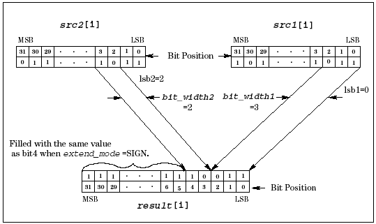
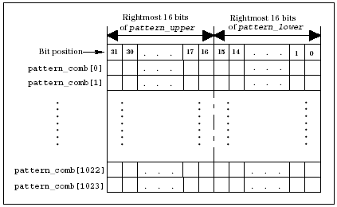

DSP_COMBINE_BIT
This API combines the specified bit blocks of two arrays in a third array.
The src1 bit block specified by lsb1 and
bit_width1 will be returned to result, starting from bit
0. The src2 bit block specified by lsb2 and
bit_width2 will be returned to result, starting from
where the src1 bit block ended. The following figure shows the operation of
the DSP_COMBINE_BIT procedure.
If extend_mode = SIGN, all the remaining bits in result will be set to the same value as the last bit in the src2 bit block, that is, the sign is extended.
If bit_width1 + bit_width2 = 32, extend_mode has no meaning.

This API is defined in the header file /opt/hp93000/soc/prod_com/include/MAPI/libdsp.h.
Syntax
DSP_COMBINE_BIT(ARRAY_I& src1, ARRAY_I& src2,
ARRAY_I& result, INT lsb1,
INT bit_width1, INT lsb2,
INT bit_width2, INT extend_mode);
DSP_COMBINE_BIT(INT *src1,INT *src2,INT *result,
INT size, INT lsb1,INT bit_width1,
INT lsb2, INT bit_width2,
INT extend_mode);I/O |
Parameter |
Description / Range |
|---|---|---|
I |
src1 |
Source array |
I |
src2 |
Source array |
O |
result |
Combined results |
I |
size |
Number of elements to be processed 1 ≤ size ≤ 2097152 size ≤ (size of src1) size ≤ (size of src2) size ≤ (size of result) |
I |
lsb1 |
Start bit position of bit block to be extracted from src1 LSB is defined as lsb1 = 0 and MSB as lsb1 = 31 0 ≤ lsb1 ≤ 31 |
I |
bit_width1 |
Number of bits, starting with the bit position specified by lsb1, that will be extracted from src1 and copied to result 1 ≤ bit_width1 ≤ 31 1 ≤ lsb1 + bit_width1 ≤ 32 2 ≤ bit_width1 + bit_width2 ≤ 32 |
I |
lsb2 |
Start bit position of bit block to be extracted from src2 LSB is defined as lsb2 = 0 and MSB as lsb2 = 31 0 ≤ lsb2 ≤ 31 |
I |
bit_width2 |
Number of bits, starting with the bit position specified by lsb2, that will be extracted from src2 and copied to result 1 ≤ bit_width2 ≤ 31 1 ≤ lsb2 + bit_width2 ≤ 32 2 ≤ bit_width1 + bit_width2 ≤ 32 |
I |
extend_mode |
Setting mode of the remaining bits in result array ZERO: Zeros ONE: Ones SIGN: Extended sign |
Example
INT pattern_lower[1024], pattern_upper[1024];
INT pattern_comb[1024];
.
.
DSP_COMBINE_BIT(pattern_lower, pattern_upper,
pattern_comb,1024, 0, 16, 0, 16,
ZERO);In this example, the rightmost 16 bits of pattern_lower is copied to the right 16 bits of pattern_comb, and the rightmost 16 bits of pattern_upper is copied to the left 16 bits of pattern_comb. See the following figure.
